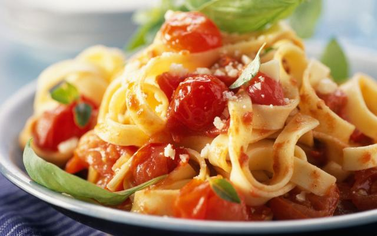

Supersnelle pasta met kerstomaatjes

Ingredienten
- 400g tagliatelle
- 400g tomatenblojkes (in blik)
- 2 olijfolie
- 1tl gedroogde oregano
- 1tl gedroogde tijm
- 1 bakje kerstomaat
- 1 teentje koflook
- basilicum
- peper
- zout
Bereiding
- Kook de tagliatelle beetgaar in kokend gezouten water. Snipper het sjalotje en de knoflook.
- Verhit een pan met olijflolie en fruit de knoflook en sjalot glazig. Voeg er een blok tomatenblokjes aan toen en breng op smaak met gedroogde oregano en gedroogde tijm. Laat 5 minuten op een zacht vuurtje stoven onder deksel.
- Spoel de kerstomaten en halveer ze. Doe ze bij de saus en laat 2 minuten meestoven, kruid met peper en zout.
- Serveer de tagliatelle met de tomatensaus en wat basilicum. Lekker met vers geraspte parmezaan.